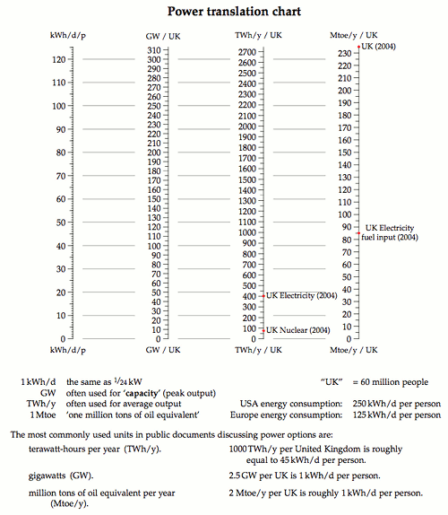
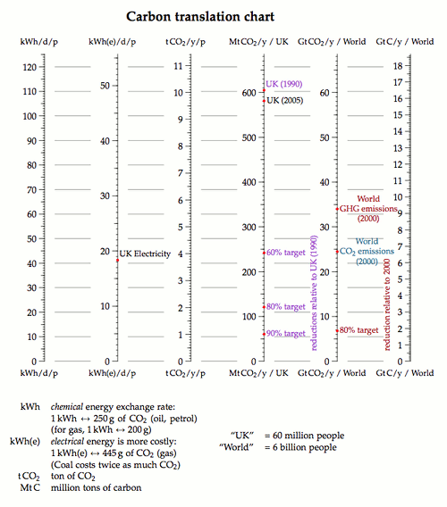

Charts
MacKay’s two translation charts are nomograms: several scales side by side, all of them linear in the same underlying quantity, so that one horizontal line drawn across them reads the same amount in every unit at once. On paper you lay a ruler across. Here you drag the line.
Added in the 2026 revision: the charts below are interactive. MacKay’s printed originals follow each one, unchanged.
Power translation chart

MacKay’s printed power translation chart, kept for reference. The interactive version above uses the same four scales and the same conversions: 60 million people to a “UK”, so that 1 kWh/d per person is 2.5 GW; 1 GW running all year is 8.76 TWh; and 1 Mtoe is 11.63 TWh.
Carbon translation chart

MacKay’s printed carbon translation chart, kept for reference. The interactive version above uses his exchange rates: 1 kWh of chemical energy is 250 g of CO2 for oil or petrol, 1 kWh of electricity is 445 g for gas, a “UK” is 60 million people and a “World” is 6 billion, and a tonne of carbon is 44/12 tonnes of CO2.